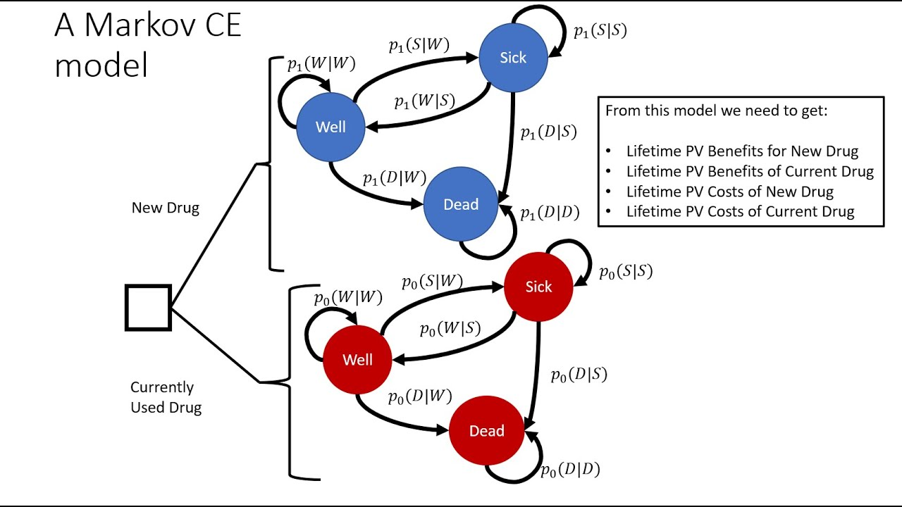

Markov models are widely used in cost-effectiveness analysis (CEA) to evaluate the costs and benefits of different healthcare interventions over time. CEA is a method that compares the costs and outcomes of alternative interventions or treatments to determine which option provides the best value for money. In the context of CEA, Markov models are particularly useful for representing the natural progression of diseases or health states over time. They allow for the evaluation of long-term costs and outcomes by dividing the progression of a disease into a series of discrete health states, with patients transitioning between these states over time based on defined probabilities.
Markov models are also used in portfolio management to model the probability of different states of the market. For example, a Markov model could be used to model the probability of the market being in a bull, bear, or stagnant state. This information can then be used to determine the optimal asset allocation for a given portfolio.